- 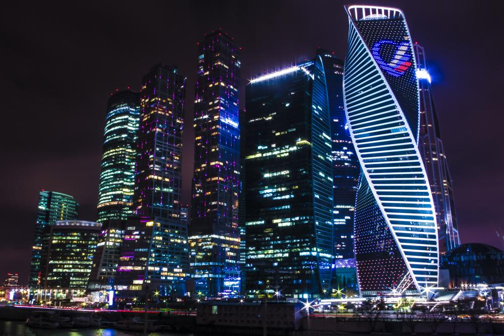 写真第1枚" title="KUTUZevent -> 写真第1枚（クリックして完全版を見る）">
- 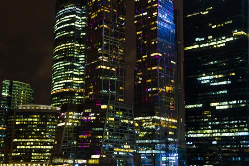 写真第2枚" title="KUTUZevent -> 写真第2枚（クリックして完全版を見る）">
- 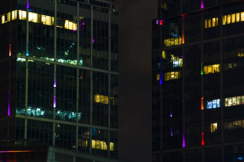 写真第3枚" title="KUTUZevent -> 写真第3枚（クリックして完全版を見る）">
- 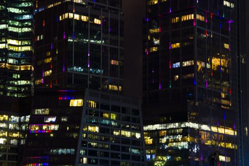 写真第4枚" title="KUTUZevent -> 写真第4枚（クリックして完全版を見る）">
- 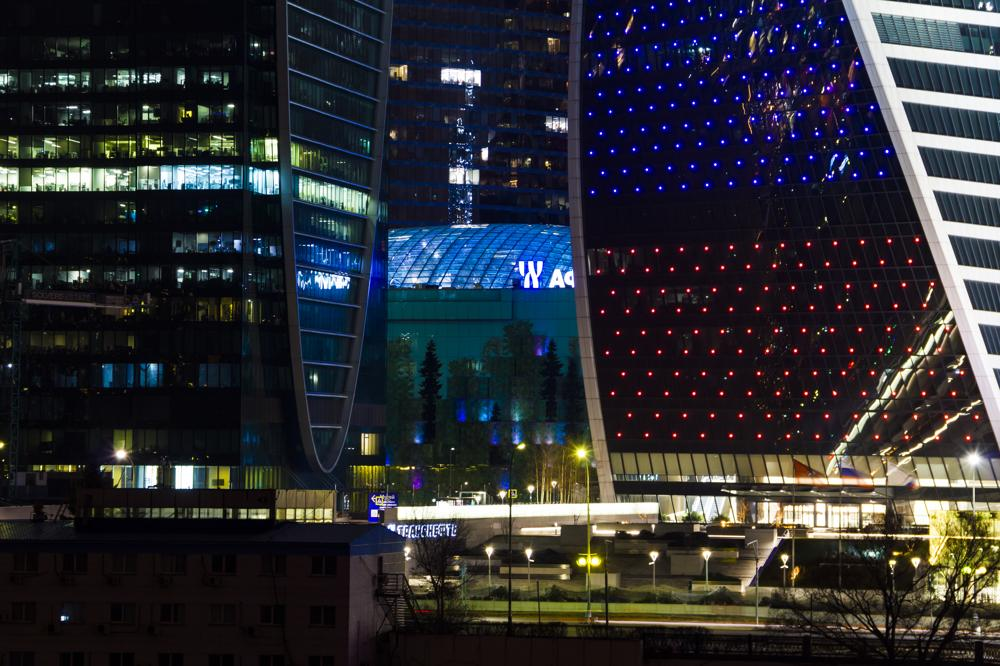 写真第5枚" title="KUTUZevent -> 写真第5枚（クリックして完全版を見る）">
- 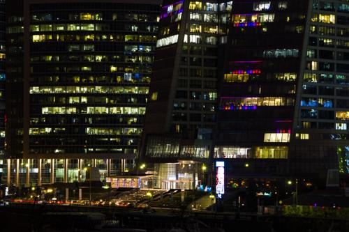 写真第6枚" title="KUTUZevent -> 写真第6枚（クリックして完全版を見る）">
- 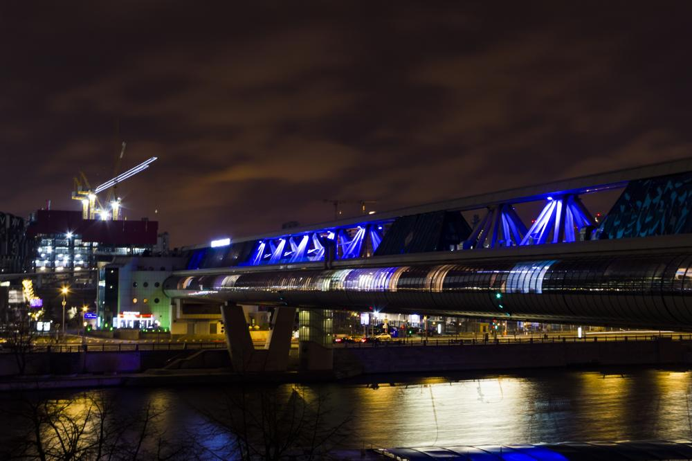 写真第7枚" title="KUTUZevent -> 写真第7枚（クリックして完全版を見る）">
- 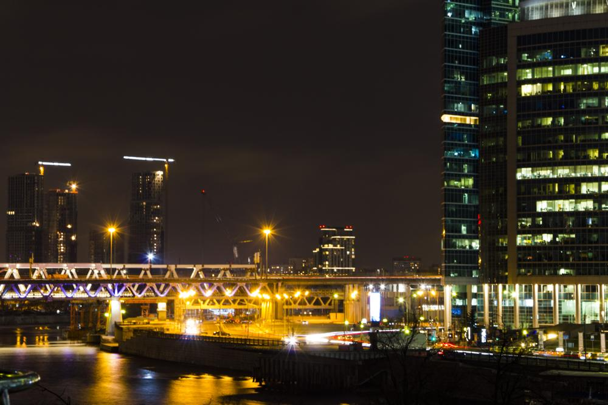 写真第8枚" title="KUTUZevent -> 写真第8枚（クリックして完全版を見る）">
- 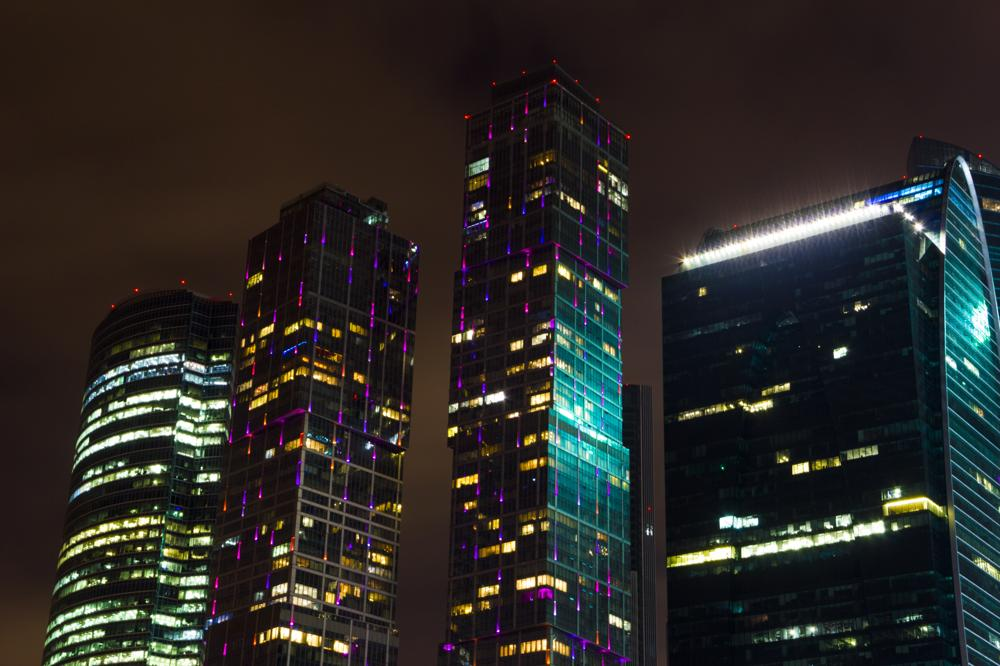 写真第9枚" title="KUTUZevent -> 写真第9枚（クリックして完全版を見る）">
- 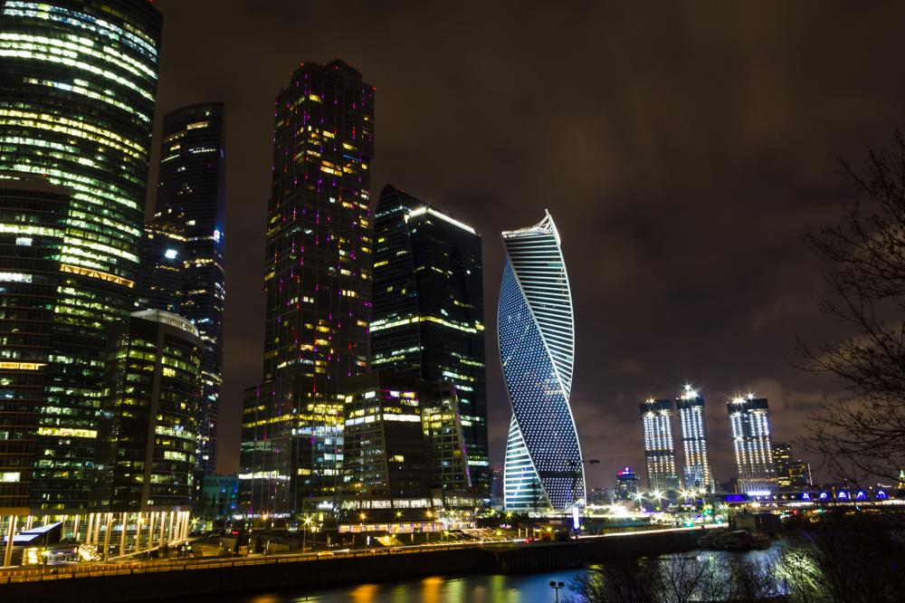 写真第10枚" title="KUTUZevent -> 写真第10枚（クリックして完全版を見る）">
- 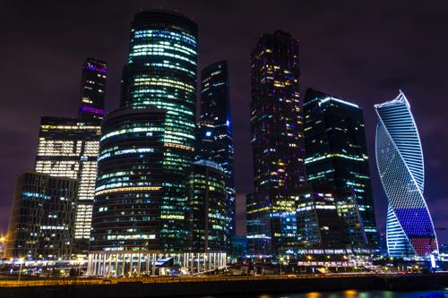 写真第11枚" title="KUTUZevent -> 写真第11枚（クリックして完全版を見る）">
- 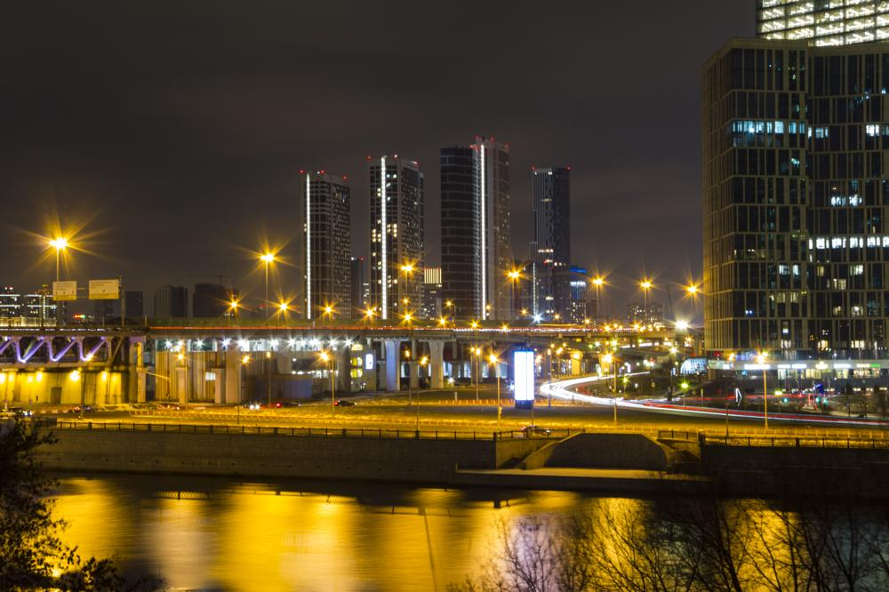 写真第12枚" title="KUTUZevent -> 写真第12枚（クリックして完全版を見る）">
- 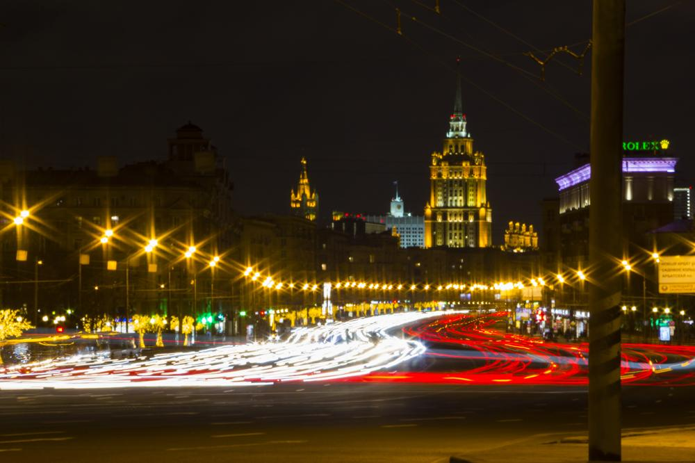 写真第13枚" title="KUTUZevent -> 写真第13枚（クリックして完全版を見る）">
- 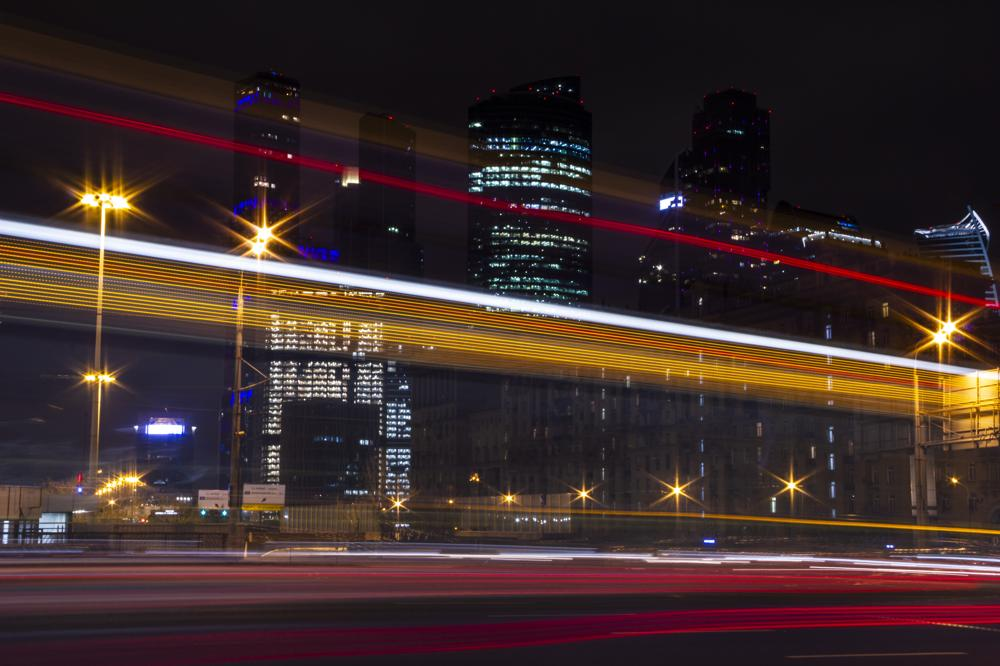 写真第14枚" title="KUTUZevent -> 写真第14枚（クリックして完全版を見る）">
- 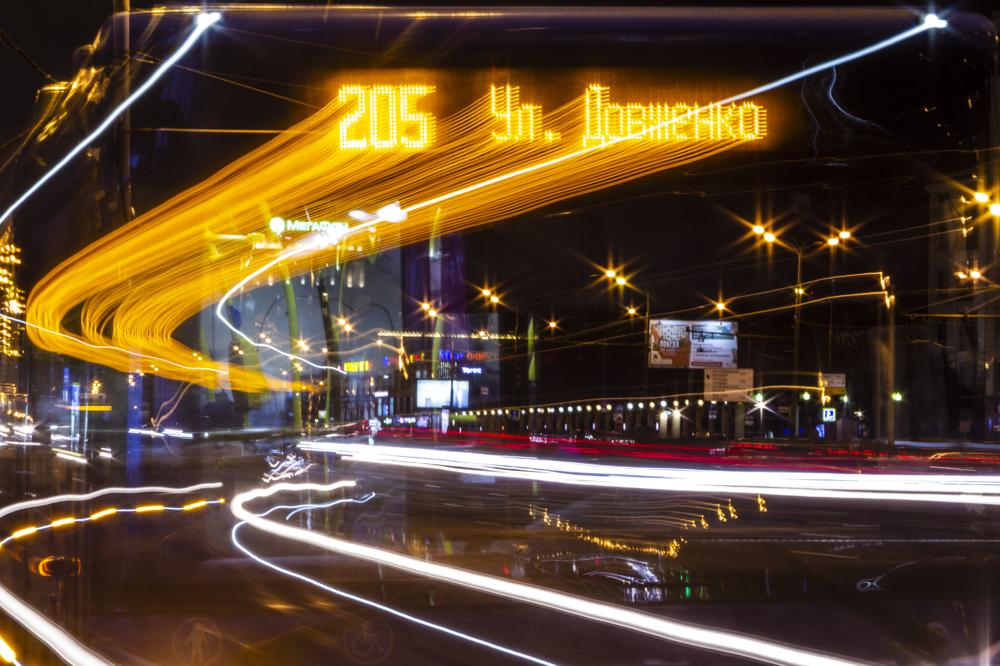 写真第15枚" title="KUTUZevent -> 写真第15枚（クリックして完全版を見る）">
- 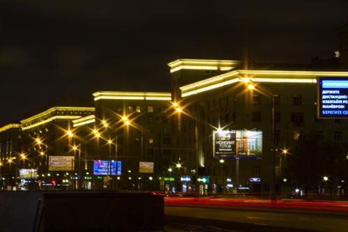 写真第16枚" title="KUTUZevent -> 写真第16枚（クリックして完全版を見る）">
- 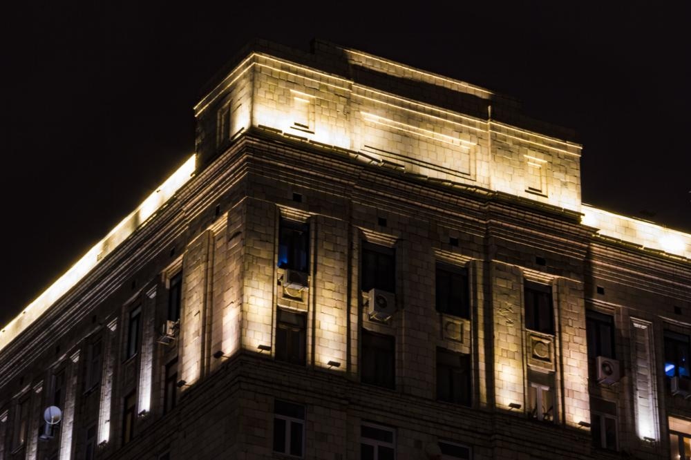 写真第17枚" title="KUTUZevent -> 写真第17枚（クリックして完全版を見る）">

- 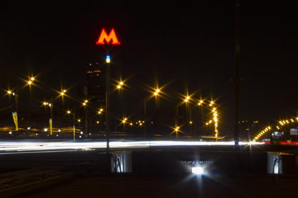 写真第19枚" title="KUTUZevent -> 写真第19枚（クリックして完全版を見る）">
- 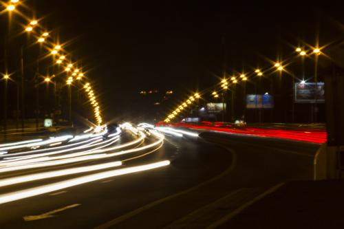 写真第20枚" title="KUTUZevent -> 写真第20枚（クリックして完全版を見る）">
- 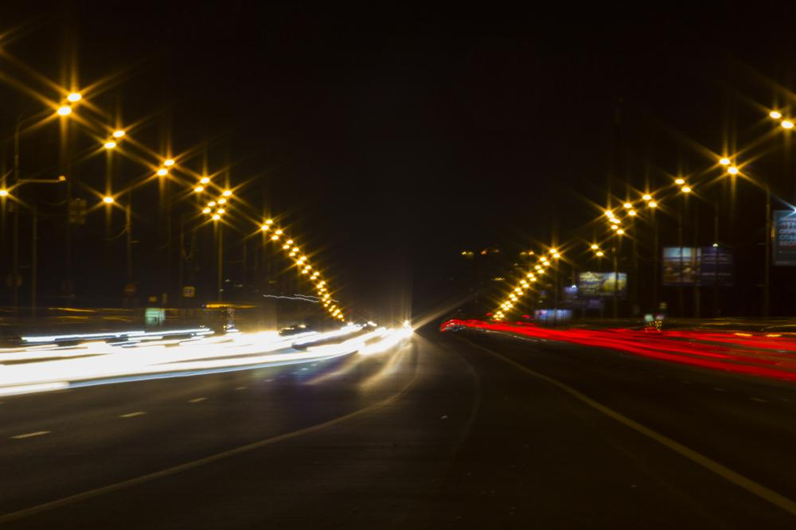 写真第21枚" title="KUTUZevent -> 写真第21枚（クリックして完全版を見る）">
- 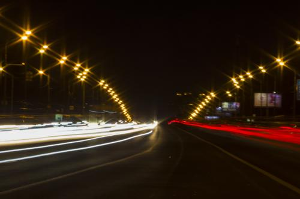 写真第22枚" title="KUTUZevent -> 写真第22枚（クリックして完全版を見る）">
- 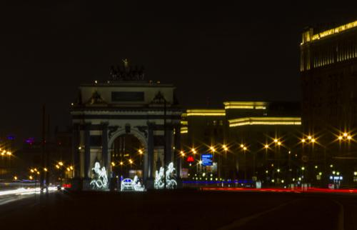 写真第23枚" title="KUTUZevent -> 写真第23枚（クリックして完全版を見る）">